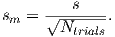
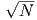
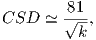

BACKGROUND: read Taylor (1982), Chapters 1-5.
We have laid out the need for statistical analysis of paleomagnetic data in the
preceding chapters. For instance, we require a method for determining a mean
direction from a set of observations. Such a method should provide some measure
of uncertainty in the mean direction. Additionally, we need methods for assessing
the significance of field tests of paleomagnetic stability. In this chapter, we
introduce basic statistical methods for analysis of directional data. It is
sometimes said that statistical analyses are used by scientists in the same manner
that a drunk uses a light pole: more for support than for illumination. Although
this might be true, statistical analysis is fundamental to any paleomagnetic
investigation. An appreciation of the basic statistical methods is required to
understand paleomagnetism.
Most of the statistical methods used in paleomagnetism have direct analogies to
“planar” statistics. We begin by reviewing the basic properties of the normal
distribution. This distribution is used for statistical analysis of a wide variety of
observations and will be familiar to many readers. We then tackle statistical
analysis of directional data by analogy with the normal distribution. Although
the reader might not follow all aspects of the mathematical formalism, this is no
cause for alarm. Graphical displays of functions and examples of statistical
analysis will provide the more important intuitive appreciation for the
statistics.
Any statistical method for determining a mean (and confidence limit) from a set
of observations is based on a probability density function. This function describes
the distribution of observations for a hypothetical, infinite set of observations
called a population. The Gaussian probability density function (normal
distribution) has the familiar bell-shaped form shown in Figure 11.1a. The
meaning of the probability density function f(z) is that the proportion of
observations within an interval of incremental width dz centered on z is
f(z)dz.
The Gaussian probability density function is given by:
 | (11.1) |
where

x is the variable measured, μ is the true mean, and σ is the standard
deviation. The parameter μ determines the value of x about which the
distribution is centered, while σ determines the width of the distribution
about the true mean. By performing the required integrals (computing
area under curve f(z)), it can be shown that 68% of the readings in a
normal distribution are within σ of μ, while 95% are within 1.96σ of
μ.
The usual situation is that one has made a finite number of measurements of a
variable x. In the literature of statistics, this set of measurements is referred to as
a sample. Let us say that we made 1000 measurements of some parameter, say
bed thickness (in cm) in a particular sedimentary formation. We plot these in
histogram form in Figure 11.1b.
By using the methods of Gaussian statistics, one is supposing that the observed
sample has been drawn from a population of observations that is normally
distributed. The true mean and standard deviation of the population are, of
course, unknown. But the following methods allow estimation of these quantities
from the observed sample. A normal distribution can be characterized by two
parameters, the mean (μ) and the variance σ2. How to estimate the parameters
of the underlying distribution is the art of statistics. We all know that the
arithmetic mean of a batch of data x drawn from a normal distribution is
calculated by:
 where N is the number of measurements and xi is an individual measurement.
where N is the number of measurements and xi is an individual measurement.
The mean estimated from the data shown in Figure 11.1b is 10.09. If
we had measured an infinite number of bed thicknesses, we would have
gotten the bell curve shown as the dashed line and calculated a mean of
10.
The “spread” in the data is characterized by the variance σ2. Variance for normal
distributions can be estimated by the statistic s2:
In order to get the units right on the spread about the mean (cm – not cm2), we
have to take the square root of s2. The statistic s gives an estimate of the
standard deviation σ and is the bounds around the mean that includes 68% of
the values. The 95% confidence bounds are given by 1.96s (this is what a “2-σ
error” is), and should include 95% of the observations. The bell curve
shown in Figure 11.1b has a σ (standard deviation) of 3, while the s is
2.97.
If you repeat the bed measuring experiment a few times, you will never get
exactly the same measurements in the different trials. The mean and standard
deviations measured for each trial then are “sample” means and standard
deviations. If you plotted up all those sample means, you would get another
normal distribution whose mean should be pretty close to the true mean, but
with a much more narrow standard deviation. In Figure 11.1c we plot a
histogram of means from 100 such trials of 1000 measurements each drawn from
the same distribution of μ = 10,σ = 3. In general, we expect the standard
deviation of the means (or standard error of the mean, sm) to be related to s
by

What if we were to plot up a histogram of the estimated variances as in
Figure 11.1c? Are these also normally distributed? The answer is no, because
variance is a squared parameter relative to the original units. In fact, the
distribution of variance estimates from normal distibutions is expected to be
chi-squared (χ2). The width of the χ2 distribution is also governed by how many
measurements were made. The so-called number of degrees of freedom (ν) is given
by the number of measurements made minus the number of measurements
required to make the estimate, so ν for our case is N - 1. Therefore we expect
the variance estimates to follow a χ2 distribution with N - 1 degrees of freedom
of χν2.
The estimated standard error of the mean, sm, provides a confidence limit for the
calculated mean. Of all the possible samples that can be drawn from a particular
normal distribution, 95% have means, x, within 2sm of x. (Only 5% of
possible samples have means that lie farther than 2sm from x.) Thus the
95% confidence limit on the calculated mean, x, is 2sm, and we are 95%
certain that the true mean of the population from which the sample was
drawn lies within 2sm of x. The estimated standard error of the mean, sm
decreases 1/ . Larger samples provide more precise estimations of the true
mean; this is reflected in the smaller confidence limit with increasing
N.
. Larger samples provide more precise estimations of the true
mean; this is reflected in the smaller confidence limit with increasing
N.
We often wish to consider ratios of variances derived from normal distributions
(for example to decide if the data are more scattered in one data set relative to
another). In order to do this, we must know what ratio would be expected from
data sets drawn from the same distributions. Ratios of such variances
follow a so-called F distribution with ν1 and ν2 degrees of freedom for
the two data sets. This is denoted F[ν1,ν2]. Thus if the ratio F, given
by:
 is
greater than the 5% critical value of F[ν1,ν2] (check the F distribution tables in
your favorite statistics book or online), the hypothesis that the two variances are
the same can be rejected at the 95% level of confidence.
A related test to the F test is Student’s t-test. This test compares differences in
normal data sets and provides a means for judging their significance.
Given two sets of measurements of bed thickness, for example in two
different sections, the t test addresses the likelihood that the difference
between the two means is significant at a given level of probability. If the
estimated means and standard deviations of the two sets of N1 and N2
measurements are x1,σ1 and x2,σ2 respectively, the t statistic can be calculated
by:

where
 Here ν = N1 + N2 - 2. If this number is below a critical value for t then the null
hypothesis that the two sets of data are the same cannot be rejected at a given
level of confidence. The critical value can be looked up in t-tables in your favorite
statistics book or online.
Here ν = N1 + N2 - 2. If this number is below a critical value for t then the null
hypothesis that the two sets of data are the same cannot be rejected at a given
level of confidence. The critical value can be looked up in t-tables in your favorite
statistics book or online.
We turn now to the trickier problem of sets of measured vectors. We will consider
the case in which all vectors are assumed to have a length of one, i.e.,
these are unit vectors. Unit vectors are just “directions”. Paleomagnetic
directional data are subject to a number of factors that lead to scatter. These
include:
- uncertainty in the measurement caused by instrument noise or sample
alignment errors,
- uncertainties in sample orientation,
- uncertainty in the orientation of the sampled rock unit,
- variations among samples in the degree of removal of a secondary
component,
- uncertainty caused by the process of magnetization,
- secular variation of the Earth’s magnetic field, and
- lightning strikes.
Some of these sources of scatter (e.g., items 1, 2 and perhaps 6 above) lead to a
symmetric distribution about a mean direction. Other sources of scatter
contribute to distributions that are wider in one direction than another. For
example, in the extreme case, item four leads to a girdle distribution
whereby directions are smeared along a great circle. It would be handy to
be able to calculate a mean direction for data sets and to quantify the
scatter.
In order to calculate mean directions with confidence limits, paleomagnetists rely
heavily on the special statistics known as Fisher statistics (Fisher, 1953), which
were developed for assessing dispersion of unit vectors on a sphere. It is
applicable to directional data that are dispersed in a symmetric manner about
the true direction. We show some examples of such data in Figure 11.2 with
varying amounts of scatter from highly scattered in the top row to rather
concentrated in the bottom row. All the data sets were drawn from a Fisher
distribution with a vertical true direction.
In most instances, paleomagnetists assume a Fisher distribution for their data
because the statistical treatment allows calculation of confidence intervals,
comparison of mean directions, comparison of scatter, etc. The average
inclination, calculated as the arithmetic mean of the inclinations, will never be
vertical unless all the inclinations are vertical. In the following, we will
demonstrate the proper way to calculate mean directions and confidence regions
for directional data that are distributed in the manner shown in Figure 11.2. We
will also briefly describe several useful statistical tests that are popular in the
paleomagnetic literature.
R. A. Fisher developed a probability density function applicable to many
paleomagnetic directional data sets, known as the Fisher distribution
(Fisher, 1953). In Fisher statistics each direction is given unit weight
and is represented by a point on a sphere of unit radius. The Fisher
distribution function PdA(α) gives the probability per unit angular area of
finding a direction within an angular area, dA, centered at an angle α
from the true mean. The angular area, dA, is expressed in steredians,
with the total angular area of a sphere being 4π steredians. Directions
are distributed according to the the Fisher probability density, given
by:
where α is the angle between the unit vector and the true direction and κ is a
precision parameter such that as κ →∞, dispersion goes to zero.
We can see in Figure 11.3a the probability of finding a direction within an
angular area dA centered α degrees away from the true mean for different values
of κ. κ is a measure of the concentration of the distribution about the true mean
direction. The larger the value of κ, the more concentrated the direction; κ is 0
for a distribution of directions that is uniform over the sphere and approaches ∞
for directions concentrated at a point.
If ϕ is taken as the azimuthal angle about the true mean direction, the
probability of a direction within an angular area, dA, can be expressed
as

The sinα term arises because the area of a band of width dα varies as sinα.
It should be understood that the Fisher distribution is normalized so
that
 | (11.4) |
Equation 11.4 simply indicates that the probability of finding a direction
somewhere on the unit sphere must be unity. The probability Pdα of
finding a direction in a band of width dα between α and α + dα is given
by:

 | (11.5) |
This probability (for κ = 5,10,50,100) is shown in Figure 11.3b where the effect
of the sinα term is apparent. Equation 11.3 for the Fisher distribution function
suggests that declinations are symmetrically distributed about the mean. In
“data” coordinates, this means that the declinations are uniformly distributed
from 0 → 360∘. Furthermore, the probability Pα of finding a direction of α away
from the mean decays exponentially.
Because the intensity of the magnetization has little to do with the validity of the
measurement (except for very weak magnetizations), it is customary to assign
unit length to all directions. The mean direction is calculated by first converting
the individual moment directions (mi) (see Figure 11.4), which may be expressed
as declination and inclination (Di,Ii), to cartesian coordinates (x1,x2,x3) by the
methods given in Chapter 2. Following the logic for vector addition explained in
Appendix A.3.2, the length of the vector sum, or resultant vector R, is given
by:
The relationship of R to the N individual unit vectors is shown in Figure 11.4. R
is always < N and approaches N only when the vectors are tightly clustered. The
mean direction components are given by:
These cartesian coordinates can, of course, be converted back to geomagnetic
elements (D,I) by the familiar method described in Chapter 2.
Having calculated the mean direction, the next objective is to determine a
statistic that can provide a measure of the dispersion of the population of
directions from which the sample data set was drawn. One measure of the
dispersion of a population of directions is the precision parameter, κ. From a
finite sample set of directions, κ is unknown, but a best estimate of κ can be
calculated by
where N is the number of data points. Using this estimate of κ, we estimate the
circle of 95% confidence (p = 0.05) about the mean, α95, by:
In the classic paleomagnetic literature, α95 was further approximated
by:
 which is reliable for k larger than about 25 (see Tauxe et al., 1991). By direct
analogy with Gaussian statistics (Equation 11.2), the angular variance of a
sample set of directions is:
which is reliable for k larger than about 25 (see Tauxe et al., 1991). By direct
analogy with Gaussian statistics (Equation 11.2), the angular variance of a
sample set of directions is:
where Δi is the angle between the ith direction and the calculated mean
direction. The estimated circular (or angular) standard deviation is S, which can
be approximated by:
 | (11.11) |
which is the circle containing ~68% of the data.
Some practitioners use the statistic δ given by:
 | (11.12) |
because of its ease of calculation and the intuitive appeal (e.g., Figure 11.4) that
δ decreases as R approaches N. In practice, when N >~ 10 - 20, CSD and δ are
close to equal.
When we calculate the mean direction, a dispersion estimate, and a confidence
limit, we are supposing that the observed data came from random sampling of a
population of directions accurately described by the Fisher distribution. But we
do not know the true mean of that Fisherian population, nor do we know its
precision parameter κ. We can only estimate these unknown parameters. The
calculated mean direction of the directional data set is the best estimate of the
true mean direction, while k is the best estimate of κ. The confidence limit α95 is
a measure of the precision with which the true mean direction has been
estimated. One is 95% certain that the unknown true mean direction lies
within α95 of the calculated mean. The obvious corollary is that there is a
5% chance that the true mean lies more than α95 from the calculated
mean.
Having buried the reader in mathematical formulations, we present the following
illustrations to develop some intuitive appreciation for the statistical quantities.
One essential concept is the distinction between statistical quantities calculated
from a directional data set and the unknown parameters of the sampled
population.
Consider the various sets of directions plotted as equal area projections
(see Chapter 2) in Figure 11.2. These are all synthetic data sets drawn
from Fisher distributions with means of a single, vertical direction. Each
of the three diagrams in a row is a a replicate sample from the same
distribution. The top row were all drawn from a distribution with κ = 5, the
middle with κ = 10 and the bottom row with κ = 50. For each synthetic
data set, we estimated D,I,κ and α95 (shown as insets to the equal area
diagrams).
There are several important observations to be taken from these examples. Note
that the calculated mean direction is never exactly the true mean direction (I =
+90∘). The calculated mean inclination I varies from 78.6∘ to 89.3∘, and the
mean declinations fall within all quadrants of the equal-area projection. The
calculated mean direction thus randomly dances about the true mean
direction and deviates from the true mean by between 0.7∘ and 11.4∘. The
calculated k statistic varies considerably among replicate samples as well. The
variation of k and differences in angular variance of the data sets with the
same underlying distribution are simply due to the vagaries of random
sampling.
The confidence limit α95 varies from 19.9∘ to 4.3∘ and is shown by the
circle surrounding the calculated mean direction (shown as a triangle).
For these directional data sets, only one (Figure 11.2e) has a calculated
mean that is more than α95 from the true mean. However, if 100 such
synthetic data sets had been analyzed, on average five would have a
calculated mean direction removed from the true mean direction by more than
the calculated confidence limit α95. That is, the true mean direction
would lie outside the circle of 95% confidence, on average, in 5% of the
cases.
It is also important to appreciate which statistical quantities are fundamentally
dependent upon the number of observations N. Neither the k value (Equation 11.8)
nor the estimated angular deviation CSD (Equation 11.11) is fundamentally
dependent upon N. These statistical quantities are estimates of the intrinsic
dispersion of directions in the Fisherian population from which the data set
was sampled. Because that dispersion is not affected by the number of
times the population is sampled, the calculated statistics estimating that
dispersion should not depend fundamentally on the number of observations N.
However, the confidence limit α95 should depend on N; the more individual
measurements there are in our sample, the greater must be the precision
(and accuracy) in estimating the true mean direction. This increased
precision should be reflected by a decrease in α95 with increasing N.
Indeed Equation 11.9 indicates that α95 depends approximately on 1∕
.
Figure 11.5 illustrates these dependencies of calculated statistics on number of
directions in a data set. This diagram was constructed as follows:
- We drew a synthetic data set of N = 30 from a Fisher distribution
with a κ of 29.2 (equivalent to a circular standard deviation S of 15∘).
- Starting with the first four directions in the synthetic data set, a subset
of N = 4 was used to calculate k, CSD and δ using Equations 11.8,
11.11, and 11.12 respectively. In addition, α95 (using Equation 11.9)
was calculated. Resulting values of CSD, δ and α95 are shown in
Figure 11.5 as a function of N.
- For each succeeding value of N in Figure 11.5, the next direction from
the N = 30 synthetic data set was added to the previous subset of
directions, continuing until the full N = 30 synthetic data set was
used.
The effects of increasing N are readily apparent in Figure 11.5 in which we show
a comparison of the two estimates of S, CSD and δ. Although not fundamentally
dependent upon N, in practice the estimated angular standard deviation, CSD,
deviates from S for values of N < 15, only approaching the correct value when
N ≥ 15. As expected, the calculated confidence limit α95 decreases approximately
as 1∕ , showing a dramatic decrease in the range 4 < N < 10 and more
gradual decrease for N > 10.
, showing a dramatic decrease in the range 4 < N < 10 and more
gradual decrease for N > 10.
If directions are converted to VGPs as outlined in Chapter 2, the transformation
distorts a rotationally symmetric set of data into an elliptical distribution. The
associated α95 may no longer be appropriate. Cox and Doell (1960) suggested
the following for 95% confidence regions in VGPs. Ironically, it is more likely that
the VGPs are spherically symmetric implying that most sets of directions are
not!
 | (11.13) |
where dm is the semi-axis parallel to the meridians (lines of longitude), dp is the
semi-axis parallel to the parallels (lines of latitude), and λ is the site
paleolatitude.
The Fisher distribution allows us to ask a number of questions about
paleomagnetic data sets, such as:
- Is a given set of directions random? This is the question that we ask
when we perform a conglomerate test (Chapter 9).
- Is one data set better grouped than another as in the fold test from
Chapter 9.
- Is the mean direction of a given (Fisherian) data set different from
some known direction? This question comes up when we compare a
given data set with, for example, the directions of the present or GAD
field.
- Are two (Fisherian) data sets different from each other? For example,
are the normal directions and the antipodes of the reversed directions
the same for a given data set?
- If a given site has some samples that allow only the calculation of a
best-fit plane and not a directed line, what is the site mean direction
that combines the best-fit lines and planes (see Chapter 9)?
In the following discussion, we will briefly summarize ways of addressing these
issues using Fisher techniques. There are two fundamental principles of statistical
significance tests that are important to the proper interpretation:
- Tests are generally made by comparing an observed sample with a
null hypothesis. For example, in comparing two mean paleomagnetic
directions, the null hypothesis is that the two mean directions are
separate samples from the same population of directions. (This is
the same as saying that the samples were not, in fact, drawn from
different populations with distinct true mean directions.) Significance
tests do not disprove a null hypothesis but only show that observed
differences between the sample and the null hypothesis are unlikely to
have occurred because of sampling limitations. In other words, there is
probably a real difference between the sample and the null hypothesis,
indicating that the null hypothesis is probably incorrect.
- Any significance test must be applied by using a level of significance.
This is the probability level at which the differences between a set of
observations and the null hypothesis may have occurred by chance. A
commonly used significance level is 5%. In Gaussian statistics, when
testing an observed sample mean against a hypothetical population
mean μ (the null hypothesis), there is only a 5% chance that x is more
than 2σm from the mean, μ, of the sample. If x differs from μ by
more than 2s, x is said to be “statistically different from μ at the 5%
level of significance,” using proper statistical terminology. However,
the corollary of the actual significance test is often what is reported by
statements such as “x is distinct from μ at the 95% confidence level.”
The context usually makes the intended meaning clear, but be careful
to practice safe statistics.
An important sidelight to this discussion of level of significance is that too much
emphasis is often put on the 5% level of significance as a magic number.
Remember that we are often performing significance tests on data sets with a
small number of observations. Failure of a significance test at the 5% level of
significance means only that the observed differences between sample and null
hypothesis cannot be shown to have a probability of chance occurrence that is >
5%. This does not mean that the observed differences are unimportant. Indeed
the observed differences might be significant at a marginally higher level of
significance (for instance, 10%) and might be important to the objective of the
paleomagnetic investigation.
Significance tests for use in paleomagnetism were developed in the 1950s by G.S.
Watson and E.A. Irving. These versions of the significance tests are fairly simple,
and an intuitive appreciation of the tests can be developed through a few
examples. Because of their simplicity and intuitive appeal, we investigate these
“traditional” significance tests in the development below. However, many of these
tests have been updated using advances in statistical sampling theory. These will
be discussed in Chapter 12. While they are technically superior to the traditional
significance tests, they are more complex and less intuitive than the traditional
tests.
Watson (1956) demonstrated how to test a given directional data set for
randomness. His test relies on the calculation of R given by Equation 11.6.
Because R is the length of the resultant vector, randomly directed vectors
will have small values of R, while, for less scattered directions, R will
approach N. Watson (1956) defined a parameter Ro that can be used for
testing the randomness of a given data set. If the value of R exceeds Ro,
the null hypothesis of total randomness can be rejected at a specified
level of confidence. If R is less than Ro, randomness cannot be rejected.
Watson calculated the value of Ro for a range of N for the 95% and
99% confidence levels. Watson (1956) also showed how to estimate Ro
by:
 | (11.14) |
The estimation works well for N > 10, but is somewhat biased for smaller data
sets. The critical values of R for 5 < N < 20 from Watson (1956) are listed for
convenience in Table C.2.
The test for randomness is particularly useful for determining if, for
example, the directions from a given site are randomly oriented (the data
for the site should therefore be thrown out). Also, one can determine if
directions from the conglomerate test are random or not (see Chapter
9).
In the fold test (or bedding-tilt test), one examines the clustering of directions
before and after performing structural corrections. If the clustering improves on
structural correction, the conclusion is that the ChRM was acquired
prior to folding and therefore “passes the fold test”. The appropriate
significance test determines whether the improvement in clustering is
statistically significant. Here we will discuss a very quick, back of the
envelope test for this proposed by McElhinny (1964). This form of the fold
test is not used much anymore (see McFadden and Jones, 1981), but
serves as a quick and intuitively straight-forward introduction to the
subject.
Consider two directional data sets, one with N1 directions and k1, and one with
N2 directions and k2. If we assume (null hypothesis) that these two data sets are
samples of populations with the same k, the ratio k1∕k2 is expected to vary
because of sampling errors according to
where var[2(N2 - 1)] and var[2(N1 - 1)] are variances with 2(N2 - 1) and
2(N1 - 1) degrees of freedom. This ratio should follow the F-distribution if the
assumption of common κ is correct. Fundamentally, one expects this ratio to be
near 1.0 if the two samples were, in fact, selections from populations with
common κ. The F-distribution tables indicate how far removed from 1.0 the ratio
may be before the deviation is significant at a chosen probability level. If the
observed ratio in Equation 11.15 is far removed from 1.0, then it is highly
unlikely that the two data sets are samples of populations with the same κ. In
that case, the conclusion is that the difference in the κ values is significant and
the two data sets were most likely sampled from populations with different
κ.
As applied to the fold test, one examines the ratio of k after tectonic
correction (ka) to k before tectonic correction (kb). The significance test
for comparison of precisions determines whether ka∕kb is significantly
removed from 1.0. If ka∕kb exceeds the value of the F-distribution for the
5% significance level, there is less than a 5% chance that the observed
increase in k resulting from the tectonic correction is due only to sampling
errors. There is 95% probability that the increase in k is meaningful
and the data set after tectonic correction is a sample of a population
with k larger than the population sampled before tectonic correction.
Such a result constitutes a “statistically significant passage of the fold
test.”
The calculation of confidence regions for paleomagnetic data is largely
motivated by a need to compare estimated directions with either a known
direction (for example, the present field) or another estimated direction (for
example, that expected for a particular paleopole, the present field or a GAD
field). Comparison of a paleomagnetic data set with a given direction is
straight-forward using Fisher statistics. If the known test direction lies outside
the confidence interval computed for the estimated direction, then the
estimated and known directions are different at the specified confidence
level.
The case in which we are comparing two Fisher distributions can also be
relatively straight forward. If the two confidence circles do not overlap, the two
directions are different at the specified (or more stringent) level of certainty.
When one confidence region includes the mean of the other set of directions, the
difference in directions is not significant.
The situtation becomes a little more tricky when the data sets are as shown in
Figure 11.6a. The Fisher statistics for the two data sets are:
|
|
|
|
|
|
|
|
| i | symbol | D | I | N | R | k | α95 |
|
|
|
|
|
|
|
|
| 1 | spades | 38.0 | 45.7 | 20 | 18.0818 | 9.9 | 10.9 |
| 2 | hearts | 16.9 | 45.2 | 20 | 19.0899 | 20.9 | 7.3 |
|
|
|
|
|
|
|
|
| |
As shown in the equal area projection in Figure 11.6b, the two α95s overlap, but
neither includes the mean of the other. This sort of “grey zone” case has been
addressed by many workers.
The most common way of testing the significance of two sets of directions is a
simple F test, proposed by Watson (1956b). Consider two directional data sets:
one has N1 directions (described by unit vectors) yielding a resultant vector
of length R1; the other has N2 directions yielding resultant R2. The
statistic
must be determined, where N = N1 + N2 and R is the resultant of all N
individual directions. This F statistic is compared with tabulated values for 2
and 2(N-2) degrees of freedom. If the observed F statistic exceeds the tabulated
value at the chosen significance level, then these two mean directions are different
at that level of significance.
The tabulated F-distribution indicates how different two sample mean directions
can be (at a chosen probability level) because of sampling errors. If the calculated
mean directions are very different but the individual directional data sets are
well grouped, intuition tells us that these mean directions are distinct.
The mathematics described above should confirm this intuitive result.
With two well-grouped directional data sets with very different means,
(R1 + R2) >> R,R1 → N1, and R2 → N2, so that (R1 + R2) → N. With these
conditions, the F statistic given by Equation 11.16 will be large and will
easily exceed the tabulated value. So this simple intuitive examination of
Equation 11.16 yields a sensible result.
An alternative, and in many ways superior, statistic (V w) was proposed by
Watson (1983; see Appendix C.2.1 for details). V w was posed as a test statistic
that increases with increasing difference between the mean directions of the two
data sets. Thus, the null hypothesis that two data sets have a common
mean direction can be rejected if V w exceeds some critical value which
can be determined through what is called Monte Carlo simulation. The
technique gets its name from a famous gambling locale because we use
randomly drawn samples (“cards”) from specified distributions (“decks”)
to see what can be expected from chance. What we want to know is
the probability that two data sets (hands of cards?) drawn from the
same underlying distribution would have a given V w statistic just from
chance.
We proceed as follows:
- Calculate the V w statistic for the data sets. [The V w for the two data
sets shown in Figure 11.6a is 8.5.]
- In order to determine the critical value for V w, we draw two Fisher
distributed data sets with dispersions of k1 and k2 and N1,N2, but
having a common true direction.
- We then calculate V w for these simulated data sets.
- Repeat the simulation some large number of times (say 1000). This
defines the distribution of V ws that you would get from chance by
“sampling” distributions with the same direction.
- Sort the V ws in order of increasing size. The critical value of V w at
the 95% level of confidence is the 950th simulated V w.
The V ws simulated for two distributions with the same κ and N as our example
data sets but drawn from distributions with the same mean are plotted as a
cumulative distribution function in Figure 11.6c with the bound containing the
lowermost 95% of the simulations shown as a dashed line at 6.2. The value of 8.5,
calculated for the data set is shown as a heavy vertical line and is clearly larger
than 95% of the simulated populations. This simulation therefore supports the
suggestion that the two data sets do not have a common mean at the 95% level
of confidence.
This test can be applied to the two polarities in a given data collection to see if
they are antipodal. In this case, one would take the antipodes of one of the data
sets before calculating V w. Such a test would be a Fisherian form of the reversals
test.
Consider the demagnetization data shown in Figure 11.7 of various specimens
from a certain site. Best-fit lines from the data for the two specimens at the top
of the diagram are calculated using principal component analysis (Chapter 9).
The data from the specimen shown at the bottom of the diagram track along a
great circle path and can be used to find the pole to the best-fit plane
calculated also as in Chapter 9. McFadden and McElhinny (1988) described a
method for estimating the mean direction (diamond in central equal area
plot) and the α95 from sites that mixes planes (great circles on an equal
area projection) and directed lines (see Appendix C.2.2). The key to
their method is to find the direction within each plane that gives the
tightest grouping of directions. Then “regular” Fisher statistics can be
applied.
A different problem arises when only the inclination data are available as in the
case of unoriented drill cores. Cores can be drilled and arrive at the surface in
short, unoriented pieces. Specimens taken from such core material will be
oriented with respect to the vertical, but the declination data are unknown. It is
often desirable to estimate the true Fisher inclination of data sets having only
inclination data, but how to do this is not obvious. Consider the data in
Figure 11.8. The true Fisher mean declination and inclination are shown
by the triangle. If we had only the inclination data and calculated a
gaussian mean (< I >), the estimate would be too shallow as pointed out
earlier.
Several investigators have addressed the issue of inclination-only data. McFadden
and Reid (1982) developed a maximum likelihood estimate for the true
inclination which works reasonably well. Their approach is outlined in the
Appendix C.2.3.
By comparing inclinations estimated using the McFadden-Reid technique with
those calculated using the full vector data, it is clear that the method breaks
down at high inclinations and high scatter. It is also inappropriate for data sets
that are not Fisher distributed!
Clearly, the Fisher distribution allows powerful tests and this power lies behind
the popularity of paleomagnetism in solving geologic problems. The problem is
that these tests require that the data be Fisher distributed. How can we tell if a
particular data set is Fisher distributed? What do we do if the data are not
Fisher distributed? These questions are addressed in the rest of this chapter and
the next one.
Let us now consider how to determine whether a given data set is Fisher
distributed. There are actually many ways of doing this. There is a rather
complete discussion of the problem in Fisher et al. (1987) and if you really want
a complete treatment try the supplemental reading list at the end of this
chapter. The quantile-quantile (Q-Q) method described by Fisher et
al. (1987) is fairly intuitive and works well. We outline it briefly in the
following.
The idea behind the Q-Q method is to exploit the fact that declinations in a
Fisher distribution, when viewed about the mean, are spread around the clock
evenly – there is a uniform distribution of declinations. Also, the inclinations (or
rather the co-inclinations) are clustered close to the mean and the frequency dies
off exponentially away from the mean direction.
Therefore, the first step in testing for compatibility with a Fisher distribution is
to transpose the data such that the mean is the center of the distribution. You
can think of this as rotating your head around to peer down the mean direction.
On an equal area projection, the center of the diagram will now be the mean
direction instead of the vertical. In order to do this transformation, we first
calculate the orientation matrix T of the data and the associated eigenvectors Vi
and eigenvalues τi (Appendix A.3.5 - in case you haven’t read it yet,
do so NOW). Substituting the direction cosines relating the geographic
coordinate system X to the coordinate system defined by V, the eigenvectors,
where X is the “old” and V is the “new” set of axes, we can transform
the coordinate system for a set of data from “geographic” coordinates
(Figure 11.9a) where the vertical axis is the center of the diagram, to the
“data” coordinate system, (Figure 11.9b) where the principal eigenvector
(V1) lies at the center of the diagram, after transformation into “data”
coordinates.
Recalling that Fisher distributions are symmetrically disposed about the mean
direction, but fall off exponentially away from that direction, let us compare the
data from Figure 11.9 to the expected distributions for a Fisher distribution with
κ = 20 (Figure 11.10). The data were generated using the program fisher.py in
the PmagPy software distribution which relies on the method outlined by Fisher
et al. (1987), that draws directions from a Fisher distribution with a
specified κ. We used a κ of 20, and it should come as no surprise that the
data fit the expected distribution rather well. But how well is “well” and
how can we tell when a data set fails to be fit by a Fisher distribution?
We wish to test whether the declinations are uniformly distributed and whether
the inclinations are exponentially distributed as required by the Fisher
distribution. Plots such as those shown in Figure 11.10 are not as helpful for
this purpose as a plot known as a quantile-quantile (Q-Q) diagram (see
Fisher et al., 1987). In a Q-Q plot, the data are graphed against the value
expected from a particular distribution. Data compatible with the chosen
distribution plot along a line. The procedure for accomplishing this is given in
Appendix B.1.5. In Figure 11.11a, we plot the declinations from Figure 11.9
(in data coordinates) against the values calculated assuming a uniform
distribution and in Figure 11.11b, we plot the co-inclinations against those
calculated using an exponential distribution. As expected, the data plot along
lines. Appendix B.1.5 outlines the calculation of two test statistics Mu
and Me which can be used to assess whether the data are uniformly or
exponentially distributed respectively. Neither of these exceed the critical
values.
SUPPLEMENTAL READINGS: Fisher et al. (1987), Chapters 2–5.
Check the PmagPy website for examples on how to use the PmagPy programs
in this problem set.
Problem 1
a) Use the program fishrot.py to generate a Fisher distributed data set of
N = 20 data points, drawn from a true mean direction of D = 12∘,I = 45∘ and a
κ of 25. Save these to a file called prob1a.dat. (Use eqarea.py to admire your
handiwork.) Hint: use the Unix file redirect feature:
% fishrot.py -n 20 -D 12 -I 45 -k 25 > ps11_prob1a.dat
Note that you can also do this from within a notebook using the ’!’ option in a
code block:
!fishrot.py -n 20 -D 12 -I 45 -k 25 > ps11_prob1a.dat
As a challenge problem, you can use the function pmag.fshdev directly from the
ipython notebook environment and plot it with the ipmag functions plot_net
and and plot_di.
b) Write a program to read in ps11_prob1a.dat from a) and calculate the Fisher
statistics of: D,I,k,α95,R and CSD.
c) Now generate a second sample from the same distribution (just repeat the
fishrot.py command) and put the second set of directions in prob1c.dat. These
are two sets of directions drawn from the same distribution and certainly should
share a common mean direction (logically). But do the two data sets pass the
simple Watson F test for common mean direction? [This test will fail 5% of the
time!]
d) Generate a third sample from a distribution with D = 55∘,I = 60∘ but the
same N and κ and save it in ps11_prob1d.dat. Does this data set pass the F test
for common mean with the data in prob1a.dat? Check your answer using the
program watsons_f.py.
e) An alternative method for testing for common mean with less restrictive
assumptions uses Watson’s statistic V w. Use the program watsons_v.py to test
prob1a.dat against prob1c.dat and prob1d.dat. Do the answers using V w agree
with those using the F test?
Problem 2
a) Generate a set of directions, drawn from a Fisher distribution with a true
mean inclination of 70∘. Calculate the Gaussian average of the inclination data.
You can write your own script or use the PmagPy program stats.py for this.
[HINT: investigate the marvels of the Unix command awk. If you use a PC and
think you do not have this, re-read the installation instructions for the
PmagPy software package – there is a set of useful Unix utilities for
you.]
b) How does this compare with the average you calculate using your Fisher
program (or gofish.py).
c) Use the program incfish.py, which does the inclination only calculation of I.
Is this estimate closer to the Fisher estimate? Or, you can call the pmag module
function doincfish from within an IPython notebook.
Problem 3
a ) Unpack the Chapter_11 datafile from the Datafiles archive (in the
Essentials_Examples folder in Datafiles that comes with the PmagPy software
package ). You will find a file called prob3a.dat. This has: D,I, dip direction and
dip from two limbs of the fold. They are of both polarities. Separate
the data into normal and reverse polarity, flip the reverse data over to
their antipodes and calculate the Fisher statistics for the combined data
set.
b) Use the program di_tilt.py to “untilt” the data (call pmag.dotilt from an
IPython notebook). Repeat the procedure in a). Would the two data sets pass a
simple (McElhinny F test) fold test?